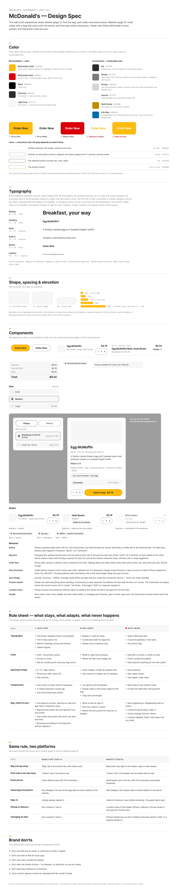
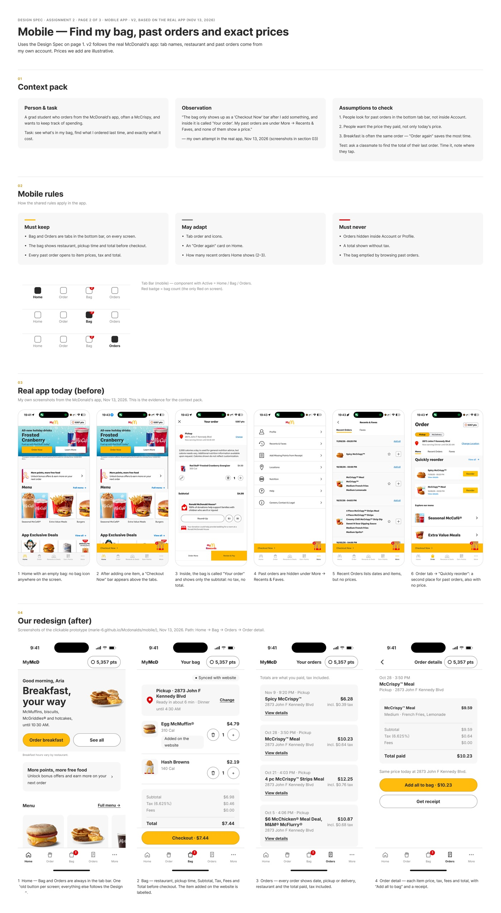
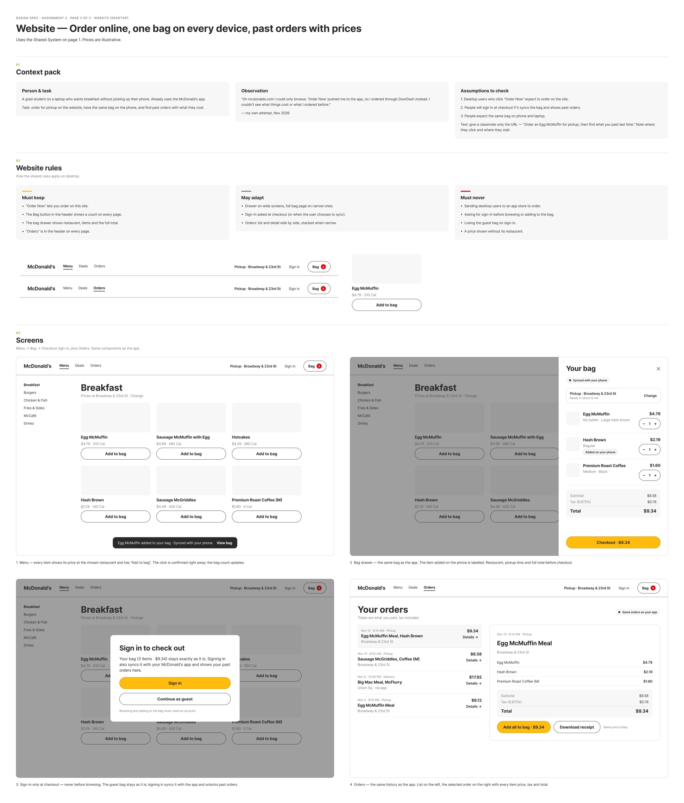

Student design prototype (SVA MFA IxD), not affiliated with McDonald's. Nothing is really ordered or paid. Prices are illustrative. Logo and product photos © McDonald's.
Assignment 2 · One System, Two Experiences
McDonald's, on the laptop and the phone
The McDonald's website only lets you browse the menu, and the app hides your bag, past orders and what you actually paid. So we redesigned both: the website now lets you order for pickup or delivery, the bag stays in sync between the website and the app, and on both you can find past orders with every item's price, the tax and the total in one step.
Try it on the website
Click an Egg McMuffin to see its details, then add it to the bag.
Switch the header from Pickup to Delivery: the fee appears in the bag before checkout.
Check out: sign-in is asked only here, and your bag is kept.
Open Orders: every item price, the tax and the total, with a receipt to download.
Try it in the app
Bag and Orders are in the tab bar on every screen.
Open Orders: each past order shows the total paid, tax included.
Open one: every item price, the tax and the total, with "Add all to bag".
The design
The Figma frames both prototypes are built from. Click one to see it full size.

01 Design Spec Color, type, spacing, components, rules 
02 App · Task A Bag, past orders and exact prices 
03 Website · Task B Ordering online, one synced bag, receipts
Both prototypes follow one Design Spec. Type is Speedee when it's installed on your computer; otherwise Inter stands in. McDonald's is a trademark of McDonald's; this exercise is not affiliated with it.